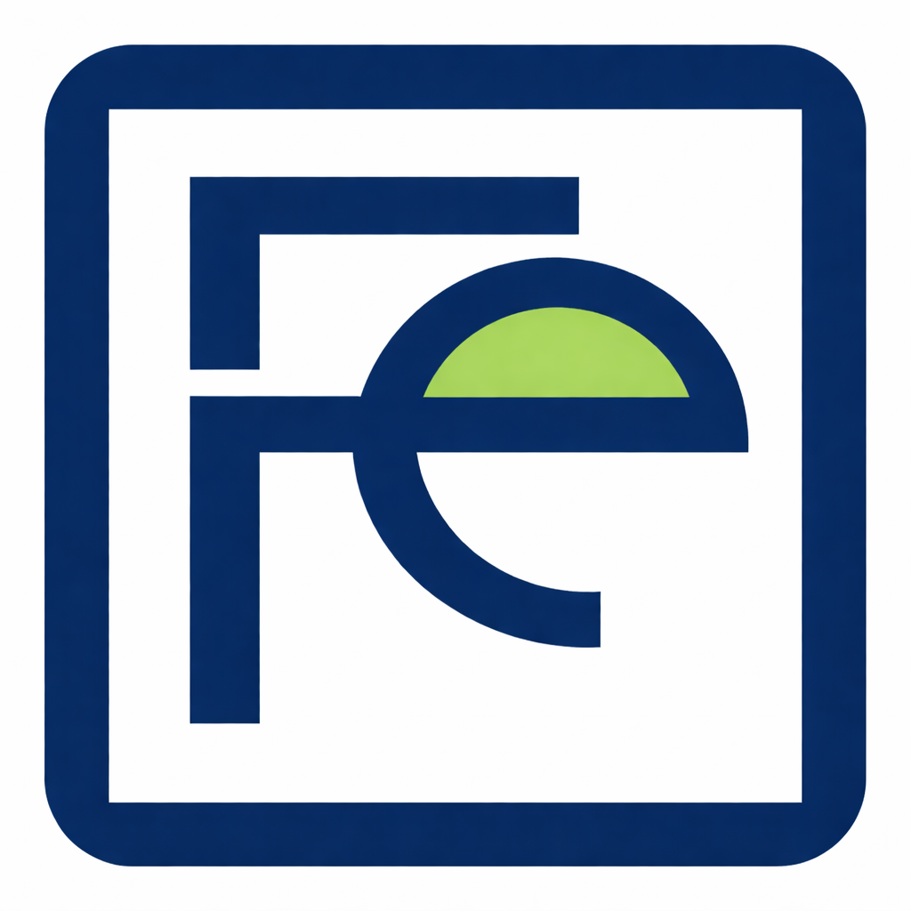

At Ferrinex, we specialize in the engineering and supply of high-performance iron tools designed to withstand the toughest environments. Whether you are managing a large-scale construction site, overseeing industrial operations, or tackling a home improvement project, our products deliver the strength and durability you can depend on.We don't just sell tools; we provide the reliability you need to build the future.
Pig iron is the raw form of iron produced from iron ore in a blast furnace. It contains a high amount of carbon and is mainly used as a base material for making cast iron, steel, and other iron products.
Cast iron is made by melting pig iron and pouring it into molds to form different shapes. It is known for its strength, durability, and good heat resistance, and is commonly used in pipes, machine parts, and cookware.
Wrought iron is a very pure form of iron with low carbon content. It is strong, tough, and easy to shape, making it suitable for decorative items such as gates, railings, and traditional metalwork.
Steel is an alloy made from iron and carbon. It is stronger and more flexible than pure iron, which makes it widely used in construction, manufacturing, tools, vehicles, and industrial equipment.
Stainless steel is a type of steel that contains chromium, which helps prevent rust and corrosion. It is commonly used in kitchen utensils, medical instruments, building materials, and industrial machinery because of its durability and resistance to corrosion.
We combine technology, expertise, and strategic thinking to deliver solutions that make a difference. Whether you're starting fresh or scaling your business, Ferrinex is your trusted partner in success. Let’s build something exceptional together.